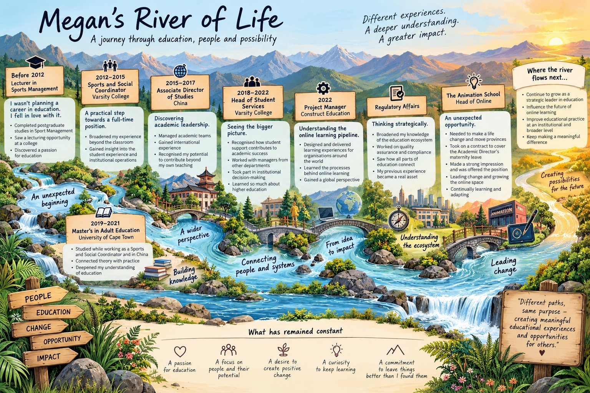

About me
My professional journey.
The river so far.
Different experiences. A deeper understanding. A greater impact.
My River of Life maps the paths, experiences and opportunities that have shaped who I am as a professional. Not all of them were planned.
Below it, I've written about each stage: what I did, what I learned, and how it changed the way I understand education.

Read a description of the image
An illustrated landscape. A river flows from mountains on the left towards a rising sun on the right, past waterfalls, bridges and small towns. Signs along its banks mark each stage of my career, in the order described on this page: lecturing in Sports Management, Sports and Social Coordinator at Varsity College, Associate Director of Studies in China, Head of Student Services at Varsity College, my Master's in Adult Education at the University of Cape Town, Project Manager at Construct Education, regulatory affairs, and Head of Online at The Animation School.
Words written on the water name what each stretch meant: an unexpected beginning, building knowledge, a wider perspective, connecting people and systems, from idea to impact, understanding the ecosystem, leading change, and creating possibilities for the future. A wooden signpost points to people, education, change, opportunity and impact. Along the bottom, a banner lists what has remained constant. A sign on the right reads: "Different paths, same purpose – creating meaningful educational experiences and opportunities for others."
Stages of my journey
-
An unexpected beginning
I wasn't planning a career in education. I fell in love with it.
After completing postgraduate studies in Sport Management, I saw an opportunity to lecture at a college and took it. That's where I discovered a passion for education I hadn't expected to find, and everything that followed grew from that unplanned beginning.
Shaped my understanding of Education Learning
-
A practical step
A practical step towards a full-time position.
This role took me beyond the classroom. I gained insight into the student experience outside lectures, and into the institutional operations that hold that experience together.
Shaped my understanding of Students Management
-
A wider perspective
Discovering academic leadership.
Managing academic teams gave me my first real experience of academic leadership, along with international experience. I also recognised my potential to contribute beyond my own teaching.
Shaped my understanding of Management Education
-
Connecting people and systems
Seeing the bigger picture.
This is where I recognised how closely student support and academic success are connected. Working with managers from other departments and taking part in institutional decision-making showed me how an institution's choices eventually reach individual students. I learned a great deal about higher education.
Shaped my understanding of Students Institutional change
-
Building knowledge
A turning point.
My Master's opened my mind to the academic and theoretical foundations of teaching and learning. For the first time, I was engaging deeply with learning and teaching theory, and finding language and ideas for things I had been working around for years.
An important part of the degree was an in-depth exploration of a specific curriculum. It gave me real insight into how a curriculum works, how it is structured, and the thinking that underpins its development.
I completed it while working as Head of Student Services at Varsity College, and the two fed each other. Study gave me new ways to understand what I saw at work, and work gave the theory something real to hold on to. Looking back, this is where some of the foundations were laid for the learning design practitioner I'm developing into.
Shaped my understanding of Learning Education
-
From idea to impact
Understanding the online learning pipeline.
As Project Manager, I managed and coordinated the development process, overseeing the different teams involved in creating and delivering learning experiences for organisations around the world.
Seeing every stage from that position taught me the processes behind online learning: the journey from an initial idea to a completed learning experience, and how many people and decisions it takes to get there. It also gave me a global perspective.
Shaped my understanding of Learning Management Online education
-
Understanding the ecosystem
Thinking strategically.
Working in quality assurance and compliance broadened my knowledge of the education ecosystem. I saw how all the parts of education connect, and my previous experience became a real asset.
Shaped my understanding of Institutional change Education
-
Leading change
An unexpected opportunity.
I needed to make a life change and move provinces. I took on a contract covering the Academic Director's maternity leave, made a strong impression, and was offered the position of Head of Online.
Today I lead change and growth in the online space, and I'm still learning and adapting. It's where the earlier stages come together, and where I'm developing my learning design practice most deliberately.
Shaped my understanding of Students Learning Management Institutional change
-
Creating possibilities for the future
The river keeps moving. Where I hope it goes next has its own page.
Different paths, same purpose.
Creating meaningful educational experiences and opportunities for others.
No single role gave me my view of education. The lecture room, student life, academic management, student support, online delivery, regulatory affairs and now leading an online department each showed it from a different side. Together they've given me a broader perspective than any one of them could have on its own.
What has stayed constant.
The roles changed. These didn't.
- A passion for education.
- A focus on people and their potential.
- A desire to create positive change.
- Curiosity and a commitment to continued learning.
- A commitment to leave things better than I found them.